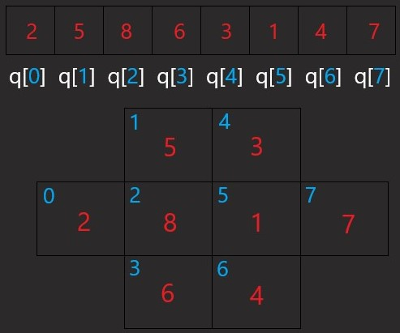

General
The purpose of this program is to write 8 numbers in a cross such that no two adjacent squares contains consecutive numbers. There are 4 solutions to this problem. This program will utilize the backtracking algorithm.
Array Representation of the Cross

Test Function
Each time a number is written in a square, it must go through the test function to check for conflicts with the previous adjacent squares.
Must check if the number has not already been used and check if none of the neighbors contain consecutive numbers.
The Adjacency Matrix: each row of the matrix is a neighbor list for a particular square.
Resources
TemplateOutput
This assignment must be submitted on blackboard.